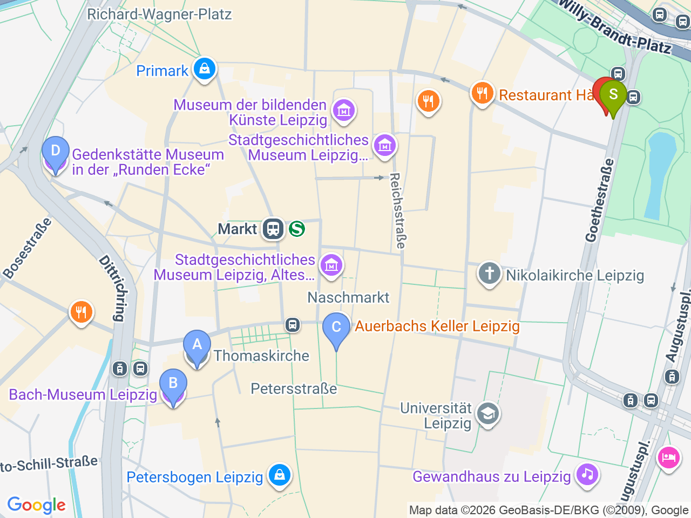
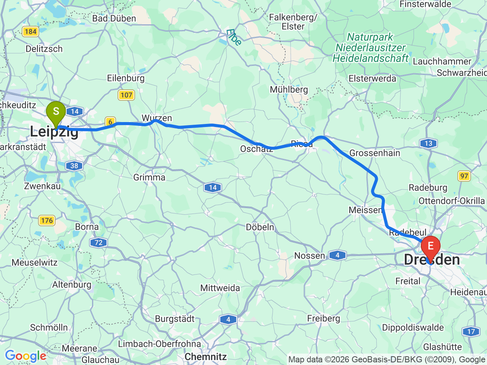
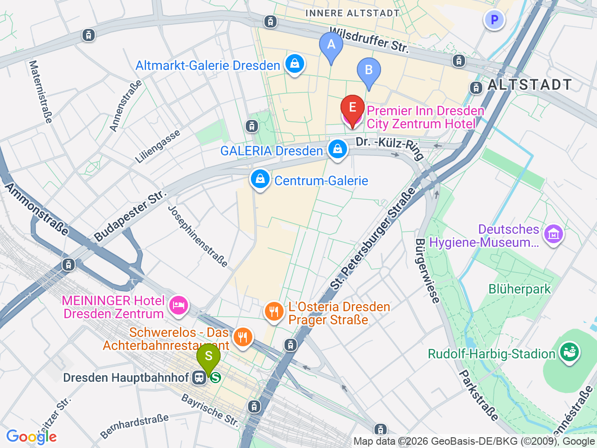

Day 22 · 2026-09-06（日）
德國・柏林/萊比錫/德勒斯登 Day 6/7
萊比錫老城尾聲：巴赫足跡與和平革命記憶 → 德勒斯登
上午走訪湯瑪士教堂、Mädler Passage 與 Runde Ecke，下午搭區域車前往德勒斯登
萊比錫市區（含飯店）

萊比錫→德勒斯登

德勒斯登市區（含飯店）

固定時間行程DAY 22
| 時間 | 地點 | 地點 (英文) | 交通方式／班次 | 價格 | 預計停留(分鐘) | 備註 |
|---|---|---|---|---|---|---|
| 13:00 | 搭 RE 50 前往德勒斯登 | 約1小時30-40分 | 持D-Ticket直接上車，免另購票免劃位；出發時間依上午行程彈性調整，出發前用 DB Navigator 查即時班次 | |||
| 14:40 | 抵達 Dresden Hbf | 1Dresden Hauptbahnhof, Dresden | 步行約15分鐘或電車 | |||
| 14:55 | 飯店 check-in | 2Premier Inn Dresden City Zentrum, Dresden | 步行 | 緊鄰 Altmarkt，之後幾天都住這裡 |
彈性探索景點DAY 22
| 地點 | 地點 (英文) | 預計停留(分鐘) | 價格 | 備註 |
|---|---|---|---|---|
| 湯瑪士教堂 | AThomaskirche, Leipzig | 約30分鐘 | 免費（或小額捐獻） | 巴赫任職27年的教堂，墓也在此 |
| 巴赫博物館 | BBach-Museum, Thomaskirchhof 15, Leipzig | 約45分鐘 | 約 €8 | 就在湯瑪士教堂對面，有興趣可入內；不進場也可外觀拍照 |
| Mädler Passage | CMädler Passage, Leipzig | 約20分鐘 | 免費 | 老城最美拱廊街，Auerbachs Keller 就在裡面（可拍照，晚餐時段已不可行） |
| Runde Ecke（東德國安局紀念館） | DRunde Ecke, Dittrichring 24, Leipzig | 約45分鐘 | 約 €5 | 前東德國安局(Stasi)地區總部原址，冷戰監控史常設展 |
| Altmarkt & Kreuzkirche | FKreuzkirche, Dresden | 約20分鐘 | 免費 | 飯店正對面，走出來就到，最省力的老城第一印象；Frauenkirche、Brühlsche Terrasse、Residenzschloss 等重點景點留到 Day23 整天逛，這裡不重複安排 |
| 晚餐：老城周邊隨興選 | 不特別指定，老城範圍內選擇很多，深度介紹留到 Day23 |
每日三餐
早餐
飯店早餐Vienna House Easy by Wyndham Leipzig
退房前於飯店享用
住宿資訊
Premier Inn Dresden City Zentrum
📍 Premier Inn Dresden City Zentrum, Dr.-Külz-Ring 15A, Dresden9/6～9/7 連住2晚，緊鄰 Altmarkt/Postplatz，步行可達 Frauenkirche、Zwinger 等老城景點